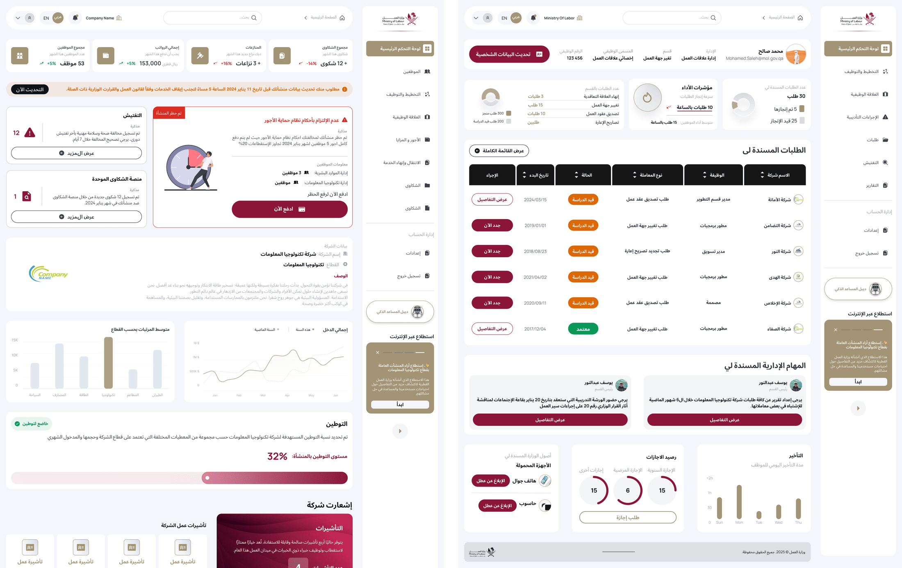
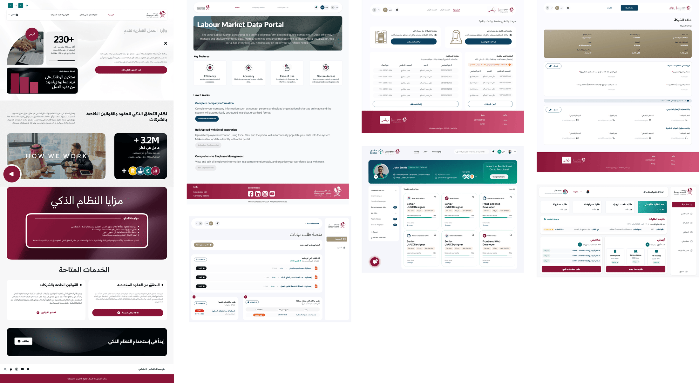

Case Study — Government AI · Labour Policy
LMIS — AI Labour
Market Intelligence
System
I designed the core dashboard, the 360 data platform, and 7+ proof-of-concept platforms for Qatar's national labour market intelligence ecosystem developed in collaboration with UN ESCWA and aligned with Qatar National Vision 2030.
UN Partnership · National Strategy · Official Ceremony
Presented at the National Strategy for an Efficient and Highly Productive Workforce 2024 – 2030 launch ceremony · UN ESCWA partnership confirmed
Under the patronage of PM Sheikh Mohammed bin Abdulrahman Al Thani · November 4, 2024 · Phase 1 launched December 2025 (QNA confirmed)
01 — The Vision
LMIS is an ecosystem —
not a single product
LMIS — Labour Market Information System is Qatar's national ambition to give the Ministry of Labour a real-time, AI-powered view of the country's workforce. But it's not one dashboard. It's a connected ecosystem of platforms that collect, validate, structure, and surface labour data at a scale Qatar hasn't had before.
A Labour Market Information System typically brings together data on employment, unemployment, occupations, skills, wages, demographics, and workforce supply and demand to support evidence-based policymaking. Qatar's LMIS goes further by integrating AI-driven forecasting and analysis as a first step towards transforming the platform into a fully fledged foresight tool for long-term planning.
"This upgrade represents a strategic leap that positions Qatar among leading nations utilizing advanced technology to support decision-making and anticipate the future of the labour market."
Gulf Times — December 23, 2025
02 — My Role
Designing the ecosystem —
dashboard, 360, and 7+ POCs
My design work spanned the full LMIS ecosystem. I designed the core LMIS dashboard, the 360 platform (a large-scale data visualization tool that consumes LMIS data), and over 7 proof-of-concept platforms each built to collect specific data or test whether the underlying data sources were viable before committing to production.
Surface 01
LMIS Dashboard
The core intelligence layer. Designed for Ministry officials to structure and access all collected labour market data serving as the central repository connecting every downstream platform in the ecosystem.
Surface 02
360 Data Platform
A large-scale platform that consumes structured LMIS data and surfaces it through dynamic reports and interactive visualizations enabling ministerial decision-making and trend analysis across the entire labour market.
Surface 03
7+ POC Platforms
Proof-of-concept platforms designed to collect data from different sources and test data quality before production. Each POC validated a specific aspect of the LMIS vision from data collection workflows to feature viability.
I also worked directly with UN ESCWA in meetings and workshops contributing to the design decisions that shaped how the AI modules and predictive analytics would integrate with the existing data architecture.
03 — The Ecosystem
How the platforms
connect
Intelligence Layer
LMIS Core Dashboard
Central repository — structures all collected data
Visualization
360 Platform
Dynamic reports & ministerial dashboards
AI Layer
AI Forecasting Module
Predictive analytics & policy analysis
Employment
Ouqoul Platform
AI recruitment feeding LMIS data
Data Collection
7+ POC Platforms
Data validation, source testing, feature viability
04 — Design Artefacts
Key screens across
the ecosystem

LMIS Dashboard — the central intelligence layer for labour market data

360 Platform — ministerial reporting and trend analysis using LMIS data

Proof-of-Concept Platforms — 7+ interfaces designed to validate data sources and test feature viability
05 — UN ESCWA Partnership
Working directly with
the United Nations
The LMIS development was carried out in close collaboration with the United Nations Economic and Social Commission for Western Asia (ESCWA). ESCWA provided specialized advisory services to develop the LMIS and supply the necessary data solutions to enable its establishment as an evidence-based policy tool.
I participated directly in meetings and workshops with the ESCWA team — contributing to decisions about how AI modules would integrate with the data architecture, how the dashboard would surface policy-relevant insights, and how the forecasting capabilities would be structured for ministerial use.
"The upgraded system combines labour market data with a central AI agent capable of analysing labour policies and generating dynamic forecasts of job demand."
UN ESCWA Official News Release — January 15, 2026
"The initiative is fully aligned with Qatar National Vision 2030 and the Sustainable Development Goals."
Qatar Tribune / QNA — December 2025
06 — National Strategy Presentation
Presented at the launch of Qatar's
National Workforce Strategy 2024–2030
On November 4, 2024, under the patronage of Prime Minister Sheikh Mohammed bin Abdulrahman Al Thani, Minister of Labour Dr. Ali bin Samikh Al Marri launched the National Strategy for an Efficient and Highly Productive Workforce 2024–2030. LMIS was presented at this ceremony as a core pillar of the strategy's digital infrastructure.
The strategy targets 8 key outcomes including increasing labour productivity by over 2% annually, raising Qatari workforce participation from 54% to 58%, integrating 16,000 Qatari nationals into the private sector, and increasing highly skilled expatriate labour from 20% to 24%. It spans 3 phases — Strengthening Foundations (2024–2025), Building Capacities (2026–2027), and Achieving Transformation (2028–2030) — with 16 initiatives and 55 projects.
"The National Strategy for an Efficient and Highly Productive Workforce is a fundamental pillar for achieving Qatar's ambitious goals, in line with Qatar National Vision 2030 and the Third National Development Strategy."
Minister of Labour Dr. Ali bin Samikh Al Marri — Launch Ceremony, November 4, 2024
16
National Initiatives
55
Projects across public & private sectors
67
Digital services upgraded
National Strategy Launch — under PM patronage, with Ministers and senior officials in the labour sector
07 — MOL360 Initiative
The 360 Platform I designed —
officially launched with Microsoft
On December 12, 2024, the Ministry of Labour officially launched the MOL360 Initiative in collaboration with Microsoft — the 360 Platform I designed as a core surface of the LMIS ecosystem. MOL360 uses Microsoft's Azure OpenAI to provide real-time labour market insights, personalized services, and advanced analytics.
The platform integrates internal and external services for Ministry staff and clients within a centralized system — covering daily responsibilities from HR to IT support, correspondence management, and labour market analytics. It provides features like real-time communication via live chat, automated reminders for Qatarisation levels, and data-driven decision tools.
"The MOL360 initiative represents a significant milestone in our journey toward digital excellence and innovation. By leveraging the latest technological advancements in collaboration with Microsoft, we are empowering Qatar's labour market with the tools to drive efficiency, enhance transparency, and foster informed decision-making."
Sheikha Najwa Al Thani, Assistant Undersecretary for Migrant Labour — December 12, 2024
In May 2025, the MOL360 platform was further expanded with a multi-agent AI system — 5 specialized AI agents working together using Microsoft's AutoGen framework to process applications in under 2 minutes, replacing a process that previously took days or weeks. This was the latest advancement built on the 360 Platform architecture I had designed.
08 — Reflection
Designing for long-term
government vision
LMIS was the most complex design challenge I've faced — not because of the UI, but because of the stakes. This system is meant to shape labour policy for an entire country. Every design decision I made about how data was structured, how insights were surfaced, and how the dashboard prioritized information had downstream effects on how officials would understand — and act on — the labour market.
The POC approach taught me that government design is about validating before committing. Building 7+ proof-of-concept platforms instead of jumping to a production system meant we could test whether data sources were viable, whether the collected data was actually useful, and whether the features we imagined would survive contact with real ministerial workflows — before investing in full development.
Working directly with UN ESCWA added a dimension I hadn't experienced before — designing at the intersection of national policy and international development frameworks. The system needed to work for Qatar's specific context while aligning with global SDG reporting standards and ESCWA's regional benchmarks. That dual accountability shaped everything.